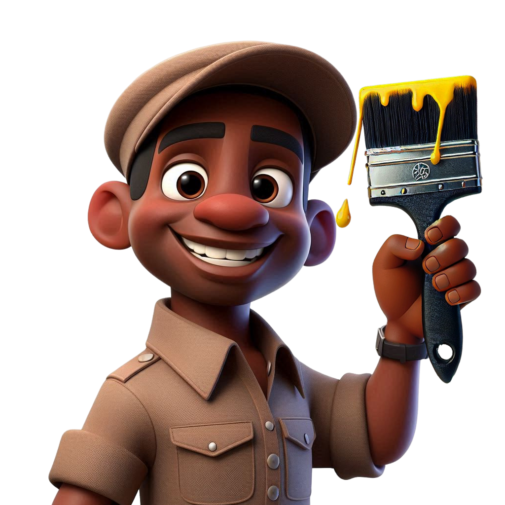
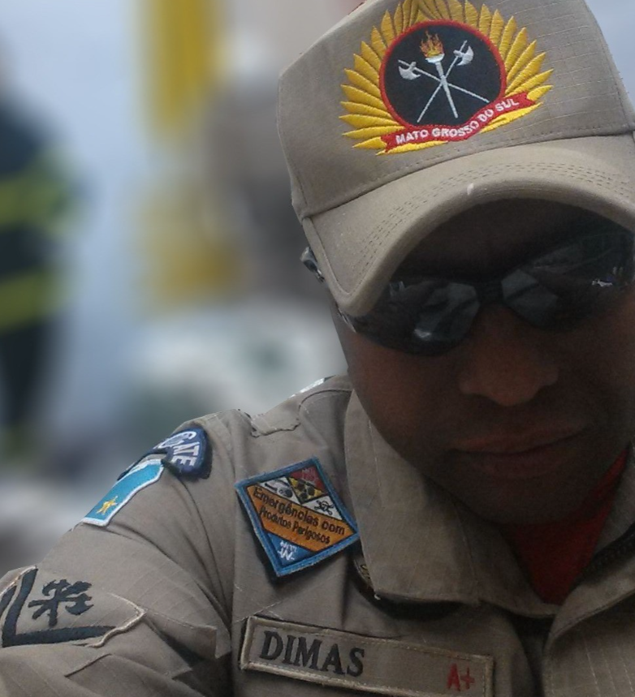

01 / IDENTIDADE VISUAL
↗PORTFÓLIO / EDIÇÃO 03 ARTE + TECNOLOGIA
Ideias que
viram impacto.
Olá, sou Dimas, designer gráfico e desenvolvedor web. Transformo criatividade em experiências visuais e digitais.
01 / 06DESIGN É MOVIMENTO.

01 — QUEM SOUUMA MENTE, MÚLTIPLAS LINGUAGENS.
PRAZER, SOU O DIMAS.
Criativo por natureza.
Curioso por escolha.
Sou formado em Artes Visuais e Designer Gráfico com mais de dez anos de experiência. Participei do programa Oracle ONE na Alura, desenvolvendo competências em tecnologia e desenvolvimento web.
Atualmente sou 1º SGT no Corpo de Bombeiros Militar de Mato Grosso do Sul, atuando na área administrativa e em apoio ao atendimento externo. Além disso, tenho experiência em design gráfico e busco sempre inovar, seja criando layouts modernos para sites ou desenvolvendo personagens 3D no estilo Disney Pixar.
Busco constante aprimoramento, aprendendo sobre novas tecnologias e expandindo meu repertório artístico. Meu trabalho é uma forma de expressão e, ao mesmo tempo, um desafio que me permite contribuir para o mundo criativo.
Conheça meu currículo
O CRIADOR POR TRÁS DAS IDEIAS10+ANOS DE EXPERIÊNCIA
02 — PORTFÓLIO SELECIONADODO CONCEITO AO RESULTADO.
UMA AMOSTRA DO QUE FAÇO
Trabalhos que falam.
Mais de dez anos de experiência criando soluções visuais para empresas e organizações, incluindo desenvolvimento de identidades visuais, layouts e ilustrações.
Uma seleção de projetos de design gráfico e web. Clique nas imagens para explorar.
03 — MINHAS FERRAMENTASCRIAÇÃO E CÓDIGO, LADO A LADO.
O QUE EU TRAGO PARA CADA PROJETO
Do pixel ao código.
Participação em projetos web utilizando HTML, CSS, JavaScript, PHP e React. Foco na criação de sites responsivos e funcionais para uma excelente experiência do usuário.
01 / DIGITAL
Desenvolvimento Web
Interfaces que unem clareza, funcionalidade e experiência.
HTML85%
CSS80%
JavaScript75%
React70%
02 / VISUAL
Design Gráfico
Identidades, ilustrações e experiências que permanecem.
Photoshop85%
Illustrator80%
UI/UX75%
3D70%
04 — TRAJETÓRIAAPRENDER É UMA ESCOLHA CONTÍNUA.
MINHA FORMAÇÃO
Experiência se constrói. Todos os dias.
Artes Visuais
IESF / FUNLEC

Oracle ONE — Desenvolvimento Web
Alura / Oracle

05 — ALÉM DO TRABALHO
Inspirações fora da tela
 Desenhar
Desenhar Tocar violão e teclado
Tocar violão e tecladoLer livros
06 — PRÓXIMO CAPÍTULO
Tem uma ideia?
Vamos dar vida.
Tem um projeto em mente? Entre em contato pelos meus canais profissionais.